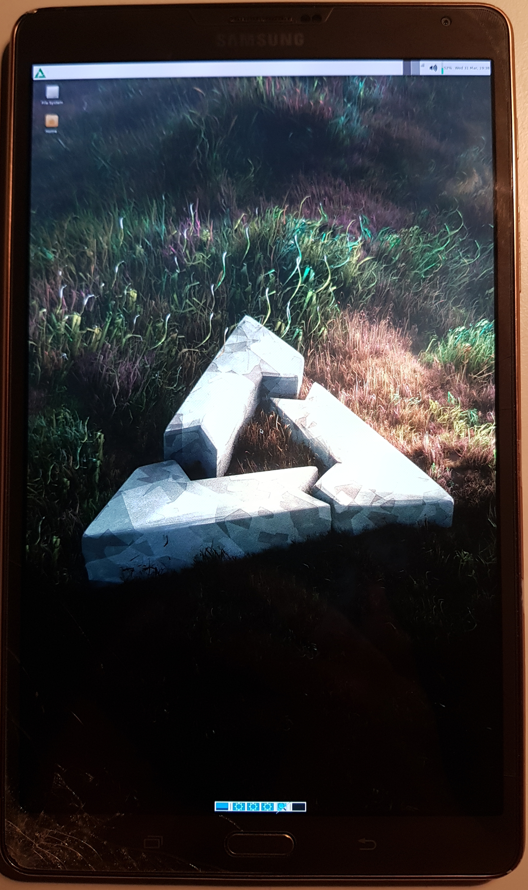

Samsung Galaxy Tab S 8.4 LTE (samsung-klimtlte)
|
 Klimtlte with the xfce GUI | |
| Manufacturer | Samsung |
|---|---|
| Name | Galaxy Tab S 8.4" LTE |
| Codename | samsung-klimtlte |
| Released | 2014 |
| Category | testing |
| Original software | Android 4.4.2 |
| Hardware | |
| Chipset | Samsung Exynos 5420 |
| CPU | 1.9 Ghz A15 Quad + 1.3 Ghz A7 Quad |
| GPU | Mali-T628 MP6 |
| Display | 2560x1600 AMOLED |
| Storage | 16/32 GB |
| Memory | 3 GB |
| Architecture | armv7 |
{kind=link}
| USB Networking |
Works
|
|---|---|
| Flashing |
Partial
|
| Touchscreen |
Works
|
| Display |
Works
|
| WiFi |
Works
|
| FDE | |
| Mainline |
Partial
|
| Battery | |
| 3D Acceleration | |
| Audio | |
| Bluetooth |
Broken
|
| Camera |
Broken
|
| GPS |
Broken
|
| Mobile data |
Broken
|
| SMS |
Broken
|
| Calls |
Broken
|
| USB OTG | |
| NFC | |
| Accelerometer | |
|---|---|
| Magnetometer | |
| Ambient Light | |
| Proximity | |
| Hall Effect | |
| Ir TX | |
|---|---|
| TrustZone | |
Contributors
Users owning this device
- Grimler (Notes: Also have a klimttd board)
How to enter flash mode
Press and hold Power + Volume Down + Home. Press Volume Up when prompted.
Installation
| Note: the port works on the klimttd variant of the tablet, i.e. the version released in China with model number T705C, as well. The differences between the models are that T705 has an Intel XMM6360 modem and a Broadcom BCM47531 gps chip, while T705C uses some Qualcomm chip for modem + gps. As neither modem nor gps works in the port you can install the port on klimttd without any consequences. |
To install postmarketOS to an sdcard, insert the sdcard to your computer, check the /dev mountpoint with for example fdisk, and run
$ pmbootstrap install --sdcard /dev/sdX
where sdX should be replaced by the mountpoint. After that flash the kernel with
$ pmbootstrap flasher flash_kernel
and the tablet should automatically reboot into postmarketOS.
To install postmarketOS to the internal storage the easiest way is to create a zip to flash from twrp, run
$ pmbootstrap install --android-recovery-zip
$ pmbootstrap export
And then copy or adb push /tmp/postmarketOS-export/pmos-samsung-chagallwifi.zip to your device, reboot to twrp and install the zip and then reboot to system.
Alternatively you can flash the kernel with heimdall from download mode and then install the rootfs with netcat by running:
$ pmbootstrap install
$ pmbootstrap initfs hook_add debug-shell
$ pmbootstrap export --odin
$ heimdall flash --BOOT /tmp/postmarketOS-export/boot.img-samsung-chagallwifi
You can now telnet to the device and netcat the postmarketOS installation:
$ telnet 172.16.42.1
$ nc -v -l -p 60000 > /dev/mmcblk0p18
Open another console
$ pv /tmp/postmarketOS-export/samsung-chagallwifi.img | nc 172.16.42.1 60000
Wifi on downstream kernel
To connect to a wifi the same steps as for the Medion Lifetab S9714 (medion-kai) work:
1. Verify that the wlan0 interface exists
$ ip link
2. Turn on wifi
$ nmcli radio wifi on
3. List available wifis
$ nmcli device wifi list
4. Connect to your wifi
$ nmcli device wifi connect "$SSID" password "$PASSWORD"
5. Verify that you have been given an ip address on the wlan0, or swlan0, interface
$ ip a
Mainline kernel status
A work in progress mainline kernel (linux-postmarketos-exynos5) is available (can be chosen in pmbootstrap init step). You can install postmarketOS to either the internal or external storage and ssh into the tablet over USB. Display, wifi and everything else are not working.
See also
- pmaports!2084 Initial merge request
- pmaports!2860 Initial mainline kernel merge request